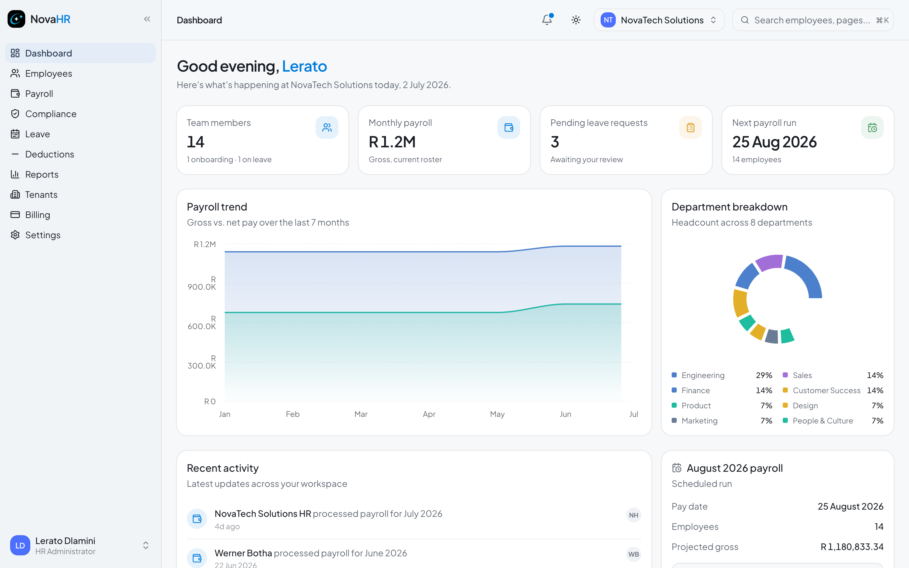

NovaHR
NovaHR
HR Administrator
User Manual
South African HR and Payroll Platform
Complete guide to managing your company workspace
HR Administrator Role
HR Administrator
Your role in NovaHR
As an HR Administrator you have unrestricted access to the entire NovaHR workspace. You are the person who set up the company account and you are responsible for onboarding staff, managing leave, running payroll, and keeping statutory returns up to date.
What you can do
- Add, edit, and terminate employees
- Approve or reject any leave request
- Run monthly payroll and issue payslips
- Track PAYE, UIF, and SDL compliance
- View workforce and payroll reports
- Invite other users (HR, managers, employees)
- Configure company, departments and payroll settings
- Manage your billing plan
What only HR can see
- All employee salaries and banking details
- Full payslip history for every employee
- PAYE / SDL / UIF return numbers
- Company bank and Netcash credentials
- Workspace user list and invite tokens
- Billing plan and subscription status
1 Enter your company's legal trading name
2 Your name and email become the first HR Admin account
3 Choose a strong password (minimum 8 characters)
Go to novahr-five.vercel.app and click Get started free on the landing page, or navigate directly to /signup.
Enter your company name. This is used as your workspace name and appears on payslips. You can update it later in Settings.
Fill in your name and email address. This email becomes your login and all system notifications will be sent here.
Set a password and click Create my company. You are immediately signed in and land on your empty dashboard.
💡Your account starts a 14-day free trial with access to all features including payroll. A countdown banner appears in the last 7 days. Contact mtshwenewesley@gmail.com to upgrade before your trial ends.
1 Enter your registered email address
2 Enter your password
3 Click Sign in to access your workspace
Go to novahr-five.vercel.app and you will be taken to the login page automatically if you are not signed in.
Enter your email and password in the form on the right side of the screen. The email is the one you used during signup.
Click Sign in. You are taken to your HR dashboard within seconds.
🔐Forgot your password? Click Forgot password below the sign-in button. You will receive an email with a reset link. The link expires after 1 hour.

1
2
3
4
5
6
7
1 Navigation sidebar: jump to any section
2 Stat cards: headcount, payroll, pending leave, next run
3 Payroll trend chart: gross vs. net over 7 months
4 Department headcount breakdown (donut chart)
5 Recent activity feed: all workspace events
6 Upcoming payroll card: next run date and projected gross
7 Your profile badge: name, role, and tenant switcher
| Menu item | What it does |
|---|
| Dashboard | Your overview: stats, charts, activity, and upcoming payroll |
| Employees | Full employee directory, profiles, and the add-employee wizard |
| Payroll | Payroll runs, payslip history, bank export |
| Compliance | PAYE, UIF, SDL return tracking and status |
| Leave | All leave requests, balances, policies, and public holidays |
| Deductions | Earnings and deduction type catalogue |
| Reports | Workforce, leave, and payroll analytics |
| Billing | Subscription plan, pricing tiers, and employee count vs. limits |
| Settings | Company details, users, departments, payroll configuration |
⌨️Press Cmd K (Mac) or Ctrl K (Windows) to open the command menu and jump to any page instantly by typing its name.
1 Add employee button (opens 4-step wizard)
2 Search by name, role, or email
3 Filter by department
4 Filter by employment status
5 Employee table: click any row to open their full profile
6 Onboarding progress bar for new starters
Status badges
- Active Currently employed
- On leave On approved leave
- Onboarding New starter in progress
- Terminated No longer active
Column tips
- Annual salary is the gross CTC figure
- Onboarding % shows checklist completion
- Click any column header to sort the table
Click Add employee in the top-right of the Employees page to open the wizard. You can save your progress at any time.
1 Step 1: Personal details and contact info
2 Step 2: Role, department, and reporting line
3 Step 3: Compensation, salary, and banking
4 Step 4: Review everything before saving
5 Form fields for the current step
Step 1: Personal details
First name and last name. These appear on payslips and in the directory.
ID number. The 13-digit SA ID number. The system automatically derives the employee's date of birth from this for tax rebate calculations (primary, secondary, or tertiary rebate based on age).
Email and phone number. The email receives all NovaHR notifications: payslips, leave decisions, and workspace invitations.
Tax number (optional). SARS income tax reference. Required for EMP501 year-end reconciliation.
Emergency contact. Name, relationship, and phone number for HR records.
Step 2: Role and employment
Job title and department. The department must already exist in Settings; if you have not created it yet you can come back after.
Employment type. Full-time, part-time, or contract. This affects how leave entitlements are applied.
Reporting manager. Select from existing employees. The manager can then see this employee's leave requests on their own dashboard.
Start date and location. The start date is used for service length and probation period tracking.
NovaHR role. Choose Employee (self-service only), Manager (can see and approve their team's leave), or HR Administrator (full access). If you want this person to log into NovaHR, you will also need to invite them in Settings > Users.
💡An employee does not automatically receive a login. After adding them here, go to Settings > Users > Invite user to send them a login invitation. See section 19 for the full invite flow.
Step 3: Compensation and banking
Annual gross salary (CTC). This is the total cost-to-company figure. The payroll calculator works backwards from this to compute monthly gross, tax, and net.
Travel and housing allowances. Travel allowance is taxed at 80% inclusion unless the employee has a logbook (20% inclusion). Enter any fixed monthly allowance amounts here.
Pension contribution %. The employee's percentage of gross salary contributed to a qualifying retirement fund. Deductible under SARS section 11F up to 27.5% of income or R430,000 per year.
Medical aid. Toggle on if the employee is a medical aid member. The number of dependants (set in their payroll profile later) determines the monthly medical aid tax credit applied to PAYE.
Bank account details. Bank name, account number, branch code, and account type. Used for the EFT bank export and Netcash batch payment.
Step 4: Review and create
Check all the details you have entered. Click Create employee to save. The employee is assigned a unique employee number (for example NT-0015) automatically. Their leave balances are seeded with the default statutory entitlements for all 9 leave types.
✅Once created, the employee appears in the directory with an Onboarding status badge and a progress tracker showing which onboarding checklist items are still outstanding.
Click any employee row in the directory to open their profile page. The profile is divided into tabs covering all aspects of the employee's record.
| Profile tab | What is shown | Who can edit |
|---|
| Personal | Name, ID number, address, emergency contact | HR, employee (self) |
| Job | Title, department, manager, start date, employment type | HR |
| Compensation | Annual gross, allowances, pension %, banking details | HR only |
| Leave | Leave balances per type, request history | HR (balances); any approved user (requests) |
| Payslips | Monthly payslip history, downloadable PDFs | HR (all); employee (own) |
| Onboarding | Checklist with tick-box items; photo upload | HR, employee (self) |
✏️To edit a field, click the pencil icon next to it or the Edit button on the relevant tab. Changes save immediately when you click Save changes.
⚠️Salary changes take effect on the next payroll run. Changing a salary mid-month after a run has started does not retroactively change that run's payslips.
1 Request leave button: submit leave for any employee
2 Filter requests by type and date range
3 Switch between Requests, Balances, Policies, Public holidays tabs
4 Leave request list: employee, type, dates, working days, status
5 Approve and Reject action buttons on pending requests
Request status colours
- Pending Awaiting a decision from HR or manager
- Approved Approved and balance decremented
- Rejected Declined with a reason
SA leave types in NovaHR
- Annual (18 working days/year)
- Sick (30 days per 36-month cycle)
- Family responsibility (3 days/year)
- Maternity (4 months / 88 days)
- Parental (10 days)
- Adoption / Commissioning (10 weeks each)
- Study and Unpaid (5 days each)
Go to Leave in the sidebar. Pending requests appear at the top of the list with an orange badge.
Click the green tick to approve, or the red X to reject. For rejections you will be prompted to enter a short reason which is included in the notification email to the employee.
After approval, the employee's leave balance is automatically decremented by the number of working days in the request (weekends and public holidays are excluded from the count).
📧The employee receives an email notification for every approval or rejection (when email is configured). The decision also appears in their NovaHR notification bell.
1 Select the employee you are requesting leave for
2 Choose the leave type; a policy description appears below
3 Pick start and end dates; working-day count updates live
4 Add a reason (required); attach a document such as a medical certificate
5 Click Submit request; the request is immediately visible in the list
The Balances tab shows each active employee with progress bars for annual, sick, family responsibility, study, and unpaid leave. The figures show days used out of total entitlement (for example 12/18 means 12 days used of 18 total).
📋The Policies tab shows the statutory basis for each leave type, including the relevant BCEA section. Refer to this when employees ask about their entitlements.
Leave balance rules
| Leave type | Entitlement | Cycle | UIF paid? |
|---|
| Annual | 18 working days | Per leave year | No (employer paid) |
| Sick | 30 working days | Per 36-month cycle | No (employer paid) |
| Family responsibility | 3 days | Per year | No (employer paid) |
| Maternity | 4 months (88 days) | Per event | Yes |
| Parental | 10 consecutive days | Per birth/adoption | Yes |
| Adoption | 10 weeks (50 days) | Per adoption | Yes |
| Commissioning parental | 10 weeks (50 days) | Per surrogacy | Yes |
| Study | 5 days | Per year | No (employer paid) |
| Unpaid | 5 days | Per year | No |
⚠️Maternity, parental, adoption, and commissioning leave is funded by UIF, not the employer. Employees must apply directly to UIF. NovaHR records the leave type and balances but does not submit UIF claims on behalf of employees.
The Public holidays tab shows all South African public holidays for 2026, 2027, and 2028. Use the year switcher at the top right to change the year.
📅Public holidays are automatically excluded when NovaHR counts working days on leave requests. If a public holiday falls on a Sunday, the following Monday is treated as the observed holiday (for example Women's Day, 9 August 2026 falls on a Sunday and 10 August is the paid holiday).
📌BCEA section 18 requires that an employee who works on a public holiday must receive double their ordinary daily pay. NovaHR does not automatically calculate this because it depends on whether the employee actually works; record it as an overtime earning on the payslip.
1 Next pay date for the scheduled upcoming run
2 Projected gross for this month (current roster)
3 Projected net after all tax and deductions
4 Year-to-date total across all completed runs
5 Start payroll run button for the current period
6 Payroll history table with all past runs and their status
What the payroll calculator does
NovaHR runs all calculations server-side using SARS tax year 2026/27 (1 March 2026 to 28 February 2027) tables:
| Component | Calculation |
|---|
| PAYE | Seven tax brackets from 18% to 45%; rebates applied by age from SA ID number |
| Primary rebate | R17,820/year for all taxpayers |
| Secondary rebate | R9,765/year for employees 65 and older |
| Tertiary rebate | R3,249/year for employees 75 and older |
| Medical aid credit (MATC) | R376/month main member, R376 first dependant, R254 each additional |
| Pension deduction (s11F) | Lesser of 27.5% of remuneration or R430,000/year |
| Travel allowance | 80% included in taxable income; 20% with logbook |
| UIF employee | 1% of gross, capped at R177.12/month |
| UIF employer | 1% of gross, capped at R177.12/month |
| SDL | 1% employer levy; only applied when annual payroll exceeds R500,000 |
📌All PAYE brackets, rebates, and UIF ceilings are based on the SARS 2026 Budget Tax Guide. Review these in Settings > Payroll and update after each March National Budget.
Go to Payroll in the sidebar. You will see the upcoming run card at the top showing the pay date, number of eligible employees, and projected gross. Click Start payroll run.
The system pre-calculates each payslip. For each active employee it fetches their current salary, allowances, pension %, medical aid dependants, any unpaid leave days taken this month, and applies the PAYE/UIF/SDL formulas. This happens automatically.
Review individual payslips. Click any employee row to view their detailed payslip. Check that gross earnings, deductions (PAYE, UIF, pension, medical aid), and net pay look correct. If a salary was recently changed, verify the figures here before finalising.
Export for bank payment (optional). Click Export EFT CSV to download a bank-ready payments file. If your bank supports Netcash, click Netcash NIF to download the formatted batch file, or Submit to Netcash to send it directly via the API.
Complete the run. Click
Complete payroll run. This:
- Locks the run (payslips become read-only)
- Emails a payslip PDF to each employee (if email is configured)
- Creates a PAYE, UIF, and SDL return record in Compliance for this period
- Schedules the next run automatically (same pay date next month)
✅After completing a run, the payslip history table on the Payroll page updates immediately. Each payslip shows the net pay, gross pay, and PAYE deducted for that period.
⚠️A completed payroll run cannot be edited or deleted. If you discover an error after completing a run, make a correcting adjustment in the following month's run (record it as a deduction or bonus earning).
Unpaid leave deductions
If an employee was on unpaid leave during the month, the days are automatically deducted from their gross pay pro rata. For example, if an employee earns R20,000/month and took 2 unpaid days out of 22 working days, R1,818 is deducted from their gross before tax is calculated.
Viewing and downloading a payslip
Go to Payroll and click any completed run in the history table.
Click an employee's name to open their payslip for that period.
Click Download PDF to save a branded payslip PDF. The PDF includes your company name, logo (from Settings), and all earnings and deductions itemised.
1 PAYE total for the selected period
2 UIF employer + employee contributions for the period
3 SDL levy for the period
4 Return history table: period, status, due date, and reference number
After each payroll run is completed, NovaHR automatically creates return records for PAYE, UIF, and SDL with:
| Status | Meaning | Action required |
|---|
| Pending | Return generated, not yet filed | File the EMP201 with SARS via eFiling; enter the reference number here |
| Submitted | You have entered a SARS reference number | Wait for SARS to process |
| Accepted | SARS confirmed receipt | No action needed |
| Rejected | SARS returned the filing | Correct and re-file via eFiling |
📌The EMP201 must be filed and paid to SARS by the 7th of the following month (or the last business day before). NovaHR shows the due date on each return so you never miss a deadline.
The Reports section provides three dashboards:
Workforce report
- Headcount trend over time
- Employment type breakdown (full-time vs. part-time)
- Department size comparison
Payroll report
- Monthly payroll cost trend
- Net vs. PAYE vs. UIF composition chart
- Year-to-date totals
Leave report
- Total approved leave days by type (bar chart)
- Leave usage over time
Go to Settings in the sidebar and stay on the Company tab. Fill in:
| Field | Why it matters |
|---|
| Legal company name | Appears on payslips and official documents |
| Company registration number | CIPC registration; used on employment contracts |
| VAT number | For invoices issued by the company |
| Industry | Used in workforce reports |
| Physical address | Appears on payslips and PAYE returns |
| Primary contact | Contact details for SARS and legal correspondence |
💡Upload your company logo in Settings > Payroll > Payslip branding. The logo appears on every payslip PDF.
1 Employee's display name on the invite
2 Email address; the invite link is sent here
3 Role: Employee, Manager, HR Administrator, or Executive
4 Send invite button; or copy the link manually if email is not configured
Go to Settings > Users tab and click Invite user.
Enter the person's name, email, and role. The role description appears below the dropdown to help you choose correctly.
Click Send invite. The system generates a secure single-use token and emails a link to the person. The link expires in 7 days.
The invitee clicks the link in their email, sets a password on the accept-invite page, and is immediately signed into NovaHR. No further action needed on your end.
📋If email is not yet configured, a Copy link button appears after you click Send invite. You can paste this link into WhatsApp or email it manually.
⚠️Invite links are single-use and expire after 7 days. If someone's link expires before they accept it, go to Settings > Users, revoke the old invite, and send a new one.
1 Add department button (name, description, and department head)
2 Colour-coded department name with live employee headcount
3 Edit or delete department from the options menu
Create a department by clicking Add department. Give it a name (for example "Engineering"), an optional description, and optionally assign a department head (must be an existing employee).
Rename or update any department using the three-dot menu on the right of its row.
Delete a department by choosing Delete from the menu. All employees in that department are automatically reassigned to the built-in "Unassigned" department. You can then reassign them individually from their profiles.
💡Create your departments before adding employees so you can assign them during the add-employee wizard. You can always update an employee's department later from their profile.
The Payroll tab in Settings controls how payroll runs are scheduled and paid.
| Setting | Description |
|---|
| Pay frequency | Monthly (default), bi-weekly, or weekly |
| Pay day | Day of the month for monthly pay (e.g. 25) |
| Company bank account | Used on payslips as the paying bank |
| SDL enabled | Toggle off if your annual payroll is below R500,000 |
| UIF rate | Default 1% for employee and employer |
| PAYE reference number | Your SARS PAYE registration number (7-digit) |
| UIF reference number | Your UIF employer registration number |
| Payslip branding | Company name, logo, and accent colour on PDFs |
| Netcash service key | Required for direct Netcash batch submission |
Go to Billing in the sidebar to see your current plan, employee count, and available upgrade tiers.
| Plan | Price | Employee limit | Features |
|---|
| Starter | R499/month | Up to 10 employees | Full HR, leave, payroll |
| Growth | R999/month | Up to 30 employees | Full HR, leave, payroll |
| Scale | R2,499/month | Unlimited | Full HR, leave, payroll |
💳To upgrade, email mtshwenewesley@gmail.com with your company name and chosen plan. Payment is by EFT invoice. Your plan is activated within 1 business day of payment confirmation.
| Shortcut | Action |
|---|
| Cmd K / Ctrl K | Open command menu to navigate anywhere |
| Esc | Close any open dialog or modal |
| Role | Can see | Can edit | Payroll access |
|---|
| HR Admin | Everything | Everything | Full access |
| Manager | Own record + direct reports | Own record only | Team payroll cost (read only) |
| Employee | Own record only | Own profile and leave | Own payslips only |
| Executive | All dashboards and reports | Nothing | Read-only summary |
- ☐ Verify all new employees and salary changes are recorded before running payroll
- ☐ Check for any approved unpaid leave days to confirm they will reduce gross pay
- ☐ Review the payslip for each employee before completing the run
- ☐ Export the EFT CSV or submit via Netcash on or before pay day
- ☐ File EMP201 with SARS by the 7th of the following month (or last business day before)
- ☐ Enter the SARS reference number in Compliance to mark the return as Submitted
If you run into a problem that is not covered by this manual, reach out via:
- ✉ Email: mtshwenewesley@gmail.com
- 📞 WhatsApp: Use the button on the NovaHR landing page (novahr-five.vercel.app)
📌This manual covers NovaHR version 1.0, current as of July 2026. Features and screenshots may differ slightly in later versions. The statutory figures (PAYE tables, UIF ceiling, rebates) reflect the SARS 2026/27 tax year and must be reviewed after the annual March budget.